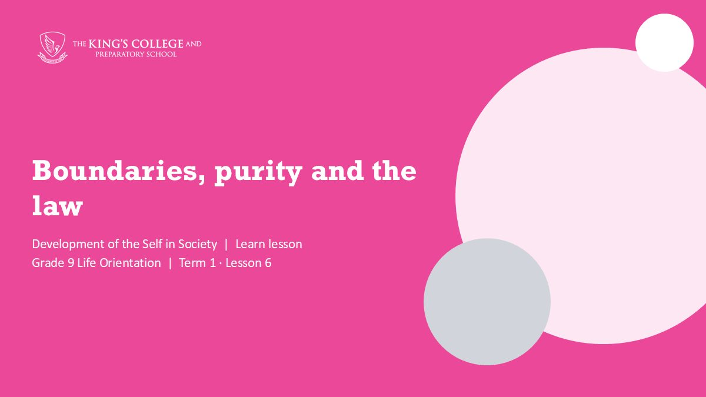

Term 1 · Lesson 6 · Learn lesson
Boundaries, purity and the law
Start here
Today I will
- Describe the consequences of early sexual activity
- Explain boundaries, consent and the law
- Know where to get help
'It won't happen to me.' Why do teenagers sometimes think risky choices have no consequences?
Words to Know
| Word | Meaning |
|---|---|
| Sexual health | Physical, emotional and social well-being about sexuality, not just the absence of disease. |
| STI | Sexually transmitted infection, passed on through sexual contact. |
| Consent | A free, clear yes without pressure, which can be withdrawn at any time. |
| Boundary | Your personal line about what is OK and not OK. |
| Sexting | Sending sexual messages or images. For under-18s it is illegal, even between friends. |
| Abstinence | Choosing not to have sex: the only completely safe choice. |
Slides

Videos
Notes
Choices about sex and relationships have real consequences: physical, emotional, social and legal. Knowing the facts, setting boundaries early and knowing where to get help protects you and the people you care about.
Sexual health
The World Health Organization explains sexual health as being well physically, emotionally, mentally and socially in the area of sexuality, which is much more than avoiding disease (WHO, 2006). It includes respect, safety, healthy relationships and being able to say no.
Consequences of early sexual activity
| Consequence | What it means |
|---|---|
| Teen pregnancy | Can interrupt schooling, put the health of mother and baby at risk, and bring financial and emotional pressure on young parents and their families. |
| STIs and HIV | Sexually transmitted infections are passed on through sexual contact. Some have no symptoms; some (like HIV and herpes) cannot be cured. Testing at a clinic is free and confidential. |
| Emotional hurt | Regret, broken trust, anxiety and low self-esteem, especially when a relationship ends. |
| Digital footprint | Images and messages can be saved, shared and stay online for ever, affecting reputation and future opportunities. |
Abstinence (choosing not to have sex) is the only completely safe choice. It also fits God's design of sex within marriage.
Boundaries
A boundary is your personal line about what is OK and not OK. Decide your boundaries BEFORE you are in a situation, because in the moment feelings, flattery or pressure make it hard to think clearly. Share your boundaries with people you trust, choose friends who respect them, and avoid situations where they are likely to be pushed (e.g. being alone with someone at a party).
Consent
Consent is a free, clear yes given without pressure. It can be withdrawn at any time. A yes given because someone is scared, drunk, threatened, tricked or guilt-tripped is NOT consent. Silence is not consent. Saying 'if you loved me you would' is pressure, not love.
What the law says
- The age of consent in South Africa is 16. Sexual activity with a child under 16 is a crime, even if the child 'agrees'.
- It is illegal to make, send, keep or forward sexual images of anyone under 18, even between friends or a couple. This is treated as child sexual abuse material.
- Grooming (an adult or older person building trust with a child in order to abuse them) is a crime.
- A child who is pressured or abused is never to blame.
Warning signs of grooming online
- Flattery: 'You're so mature for your age.'
- Secrecy: 'Don't tell your parents; they won't understand.'
- Gifts or attention, then requests for photos or meetings.
- Guilt and pressure: 'If you really liked me, you would.'
- Moving the chat to a private app.
Where to get help
- A parent, teacher, school counsellor or pastor.
- Childline: 116 (free, 24 hours).
- A clinic for confidential testing and advice.
- Report and block accounts on the app; keep screenshots as evidence.
- In danger: SAPS 10111.
Facts, not fear
The purpose of learning about consequences is not to frighten you, but to help you make informed, wise choices. In South Africa, many teenage girls fall pregnant each year, and many young people are living with HIV. Behind each number is a real person whose plans changed. Knowing the facts, having clear boundaries and having people you can talk to make a big difference.
Case study: Mia's uneasy chat
Mia met an older boy on a gaming app. At first he was friendly and complimented her a lot. Then he started asking her to keep their chats secret and to send photos. Mia felt flattered but uneasy. She told Thabo and Aarav, who said it sounded like the warning signs they had learnt about in LO. Mia blocked the account, kept screenshots and told her mother, who reported the account. Mia was relieved: she had done nothing wrong, and by speaking up she might also have protected other girls.
Questions to think about: Which warning signs did Mia notice? Why was telling an adult the right step? How did her friends help?
Saying no with confidence
- Be clear: 'No. I'm not comfortable with that.'
- Don't apologise or give long explanations.
- Use body language that matches your words: eye contact, firm voice.
- Leave the situation or the chat.
- Tell someone you trust.
Worked exam answer
Question: Recommend ONE step a teenager can take if someone pressures them online to send photos. (1 x 3) (3)
Answer: Block the person and tell a parent or teacher ✓ while keeping screenshots as evidence ✓ so that adults can protect the teen and report the person ✓.
Be able to define consent and boundary, state what the law says about images of under-18s, identify warning signs in a scenario, and recommend assertive steps with a result.
Decide your boundaries before the moment comes, and speak up if anyone crosses them.

'Guard your heart, for everything you do flows from it.' How can you guard your heart in relationships and online?
In class: What should Mia do?
- Scenario: an older boy Mia met online keeps asking her for photos and says 'if you liked me you would'.
- Name the problem and the warning signs.
- List three things Mia can do.
- Who can she tell?
Test yourself
- What is consent?
- Name two consequences of early sexual activity.
- Where can a teen get help?
Show answers
1. A free, clear yes without pressure that can be withdrawn. 2. Any two: pregnancy, STIs/HIV, emotional hurt, effect on schooling. 3. Parent, teacher, counsellor, Childline 116, clinic.
Finished early?
Write what Mia can say and do when someone online pressures her.
- Scenario: an older boy Mia met on a gaming app keeps asking her for photos and says 'if you liked me you would'.
- Write Mia's exact words to say no clearly, without apologising or explaining.
- List three actions she should take next (think: block, screenshots, tell).
- Name two people or services she can go to for help.